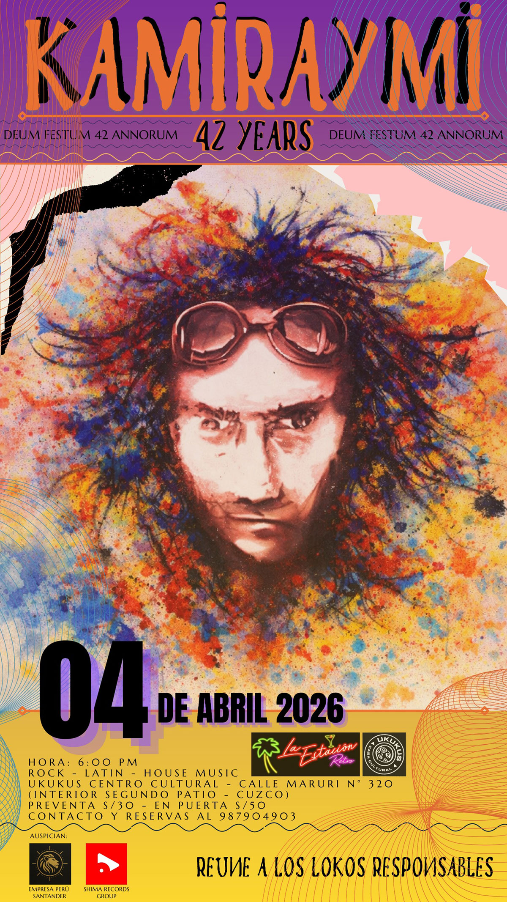

KAMIRAYMI
fecha: 04/04/26 hora: 6pm
lugar: Ukukus Centro Cultural,
Calle Maruri 320, Cusco


✨ KAMIRAYMI 2026 ✨
Una noche de reminiscencia que revive el espíritu, la música y la energía de las inolvidables noches de los 80’s y 90’s en Cusco. 🖤🎶 Una celebración para volver a sentir esa época legendaria con el estilo y la emoción que la hicieron única.
📅 04 de abril
🕕 Desde las 6:00 p. m.
📍 Calle Maruri 320, Ukukus Centro Cultural - La Estación Retro (Segundo Patio)
🎟 Preventa: S/ 30
🚪 En puerta: S/ 50
📲 Reservas e informes: 987904903
✨ Reúne a lokos responsables ✨